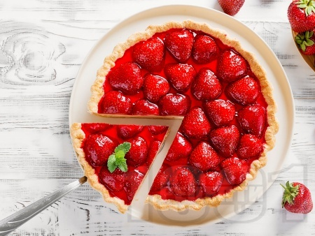

Венериански розов тарт

Начин на проготвяне
- Леко намазнете 22см форма за тарт с премахващо се дъно.
- Блиндирайте бисквитките докато изглеждат, като трохи от хляб. Прибавете кравето масло и пулсирайте още веднъж докато се комбинира с бисквитките, после прехвърлете трохите върху формата за тарт и пресирайте с ръце докато се получи равна и гладка повърхност.
- Поставете формата за тарт в хладилника за 30 минутки, за да се стегне блата.
- Нарежете ягодите на половина, поставете ги в купа и прибавете към тях пудрата захар. Смесете ги заедно.
- Разрежете маракуята на две. В отделен съд отделете вътрешният сок и семена. Използвайки цедка, пресирайте сока и семената, докато се отдели само сока от маракуята.
- Разбийте сметаната заедно със 100г захар, докато стане гъста. Прибавете към нея киселото мляко.
- Извадете тарта от хладилника и напълнете черупката със крема от сметана. Аранжирайте отгоре с ягодите и свежи листа от мента. Сервирайте поръсвайки ягодите с допълнително пудра захар.
Розов тарт с ягодов крем, вдъхновен от романтичната природа на Венера.
Венера

Факти
- Въпреки че по много показатели планетата е сходна със Земята – размер, маса, плътност, атмосферата на планетата е богата на въглероден диоксид, което поражда силен парников ефект и повишава температурата на повърхността до над 450 градуса. Определено при такива температури трудно биха се създали условия за живот.
- След Луната и Слънцето Венера е най-яркото небесно тяло, видимо от Земята. Това е причината често да е смятана за звезда и е наричана Зорница, Деница или Вечерница.
- Налягането на повърхността на планетата е огромно – 90 пъти по-високо от това на Земята. На нашата планета такова налягане може да се усети на 1 км дълбочина в океаните
- За разлика от другите планети в Слънчевата система, въртенето на Венера е по часовниковата стрелка. Планетата прави пълна обиколка около Слънцето за 224 земни дни.
- За първи път космически кораб успешно се приземява на повърхността на планетата на 17 декември 1970 г. Това е апаратът Венера 7, изстрелян от СССР на 17 август същата година. Той дори успява да изпрати до Земята информация за температурата и налягането на Венера.
- Години наред геолозите изпитваха затруднения при изучаването на повърхността на Венера, защото планетата винаги е заобиколена от плътни облаци сярна киселина. Това пораждаше най-различни хипотези, включително за вероятността на планетата да съществуват форми на живот.
- Дълго време се е считало, че естественият спътник на планетата е Нейт – твърдение, породено от наблюденията на италианския астроном Джовани Доменико Касини през 1672 г. Спорадичните съобщения за наблюдаван естествен спътник на Венера продължават чак до 1892 г. В днешно време е потвърдено, че Венера няма естествени спътници и че всички предишни съобщения са били продиктувани от бледи звезди, случайно попаднали в близост до планетата.
- Поради това, че нейната орбита е разположена по-близко до Слънцето от тази на Земята, Венера преминава през различни фази, подобни на тези на Луната. Първият човек, наблюдавал тези фази е Галилео Галилей през далечната 1610 година.
- Повърхността на Венера е осеяна с кратери и възвишения, въпреки че те са много по-малко от тези на Марс, Луната и Меркурий, например. Учените смятат, че това се дължи на силната вулканична дейност, която е „изгладила“ неравностите. Около 65% от повърхността на планетата е покрита от гладки равнини, осеяни с вулкани.
- Атмосферата на Венера е най-тежка от всички планети в Слънчевата система. Тя съдържа предимно въглероден диоксид с малки количества азот и водни изпарения. Атмосферата на планетата съдържа още и незначителни количества от аргон, неон и серен диоксид.